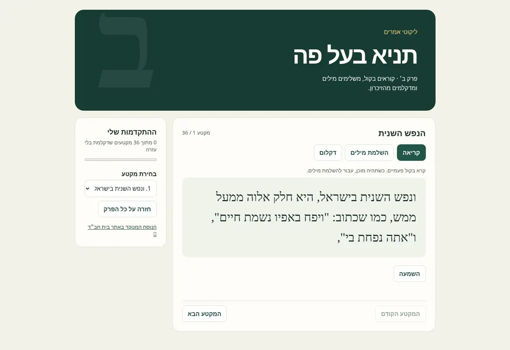
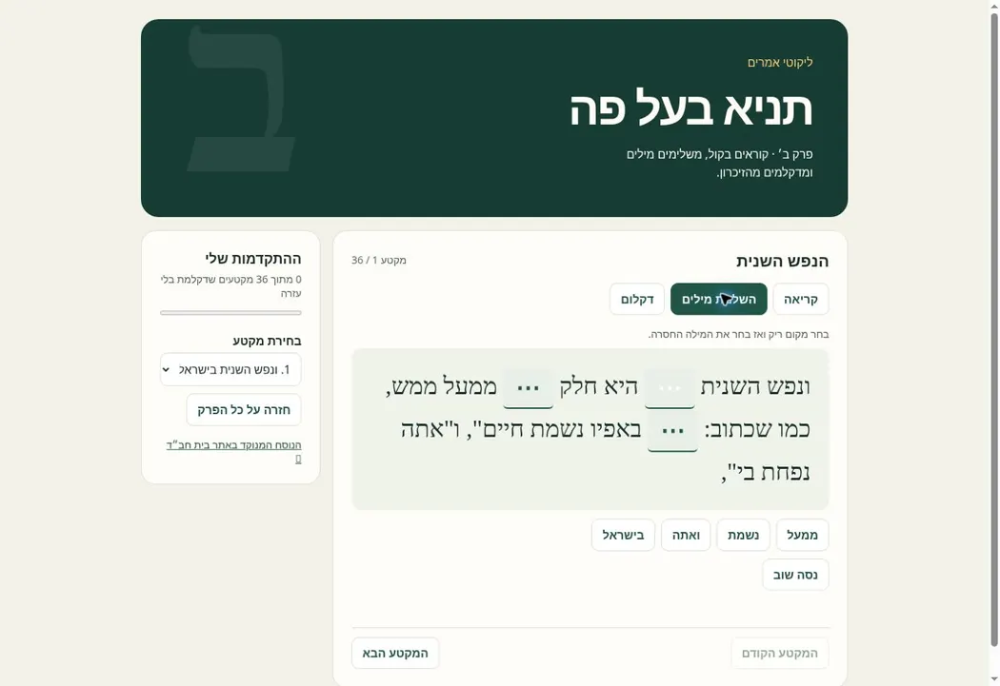

תניא בעל פה · פרק ב׳
פרק ב׳ בליקוטי אמרים מחולק למקטעים קצרים לשינון הדרגתי.
פתיחת האפליקציהאיך משתמשים?
- בחרו מקטע וקראו אותו או האזינו. עברו להשלמת מילים ואז לדקלום בלי הטקסט.
- השתמשו ברמזים לפי הצורך וסמנו את המקטעים שכבר הצלחתם לדקלם.
מתוך האפליקציה



